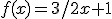
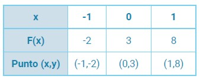
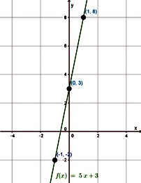
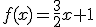
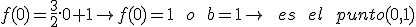
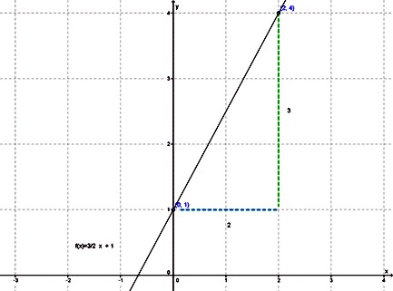
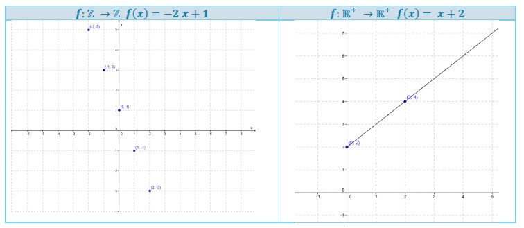

¿Como construimos el gráfico?
A través de una tabla de valores
Dada la función 

Representamos los puntos (x,y) en un eje cartesiano y los unimos con una recta.

A partir de la ordenada al origen y de la pendiente
Grafiquemos la función 
La Ordenada al Origen 
La pendiente a = 2/3 , lo que indica que cuando x aumenta 2, entonces y aumenta 3.
Paso 1: marcamos la ordenada al origen en el eje cartesiano: (0,1).
Paso 2: buscamos el segundo punto a partir de la ordenada al origen y la pendiente. Como la ordenada al origen es el punto (0,1) y la pendiente indica que cuando x aumenta 2, entonces y aumenta 3, sumamos a la x de la ordenada al origen 2 y a la y de la ordenada al origen 3: (0,1) + (2,3) = (0 + 2, 1+3) = (2,4).

Algunos ejemplos de tipos de gráficas según el dominio y la imagen


Si querés comprender mejor como graficar la función lineal a partir de su pendiente y su ordenada cliquea sobre el enlace para ver el video.
Link - Grafica a partir de la ordenada al origen y de la pendiente
Obra publicada con Licencia Creative Commons Reconocimiento Compartir igual 4.0